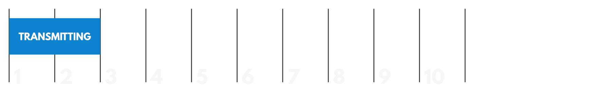
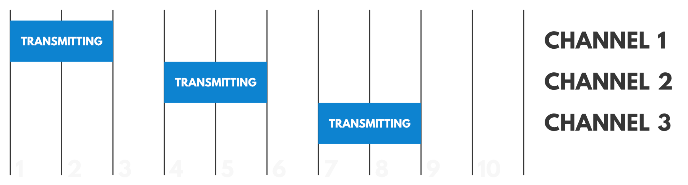
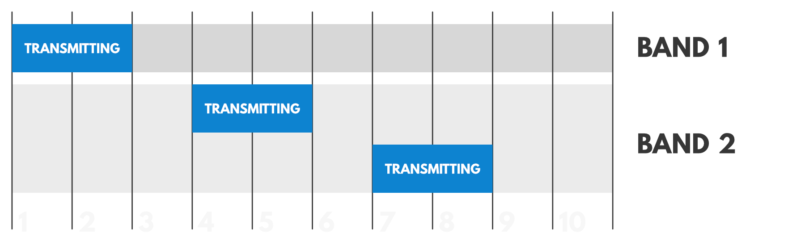
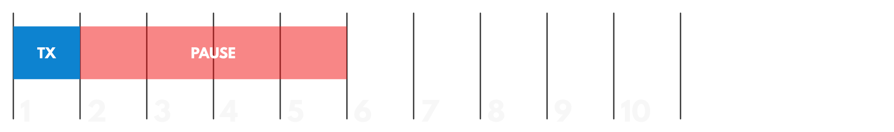
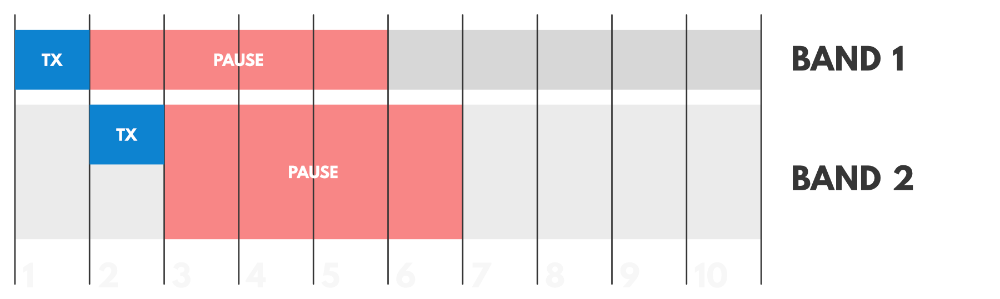
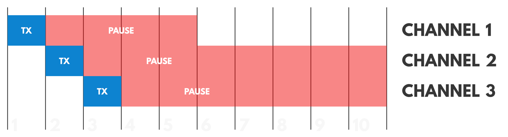

Duty Cycle
Duty Cycle indicates the fraction of time a resource is busy.
When a single device transmits on a channel for 2 time units every 10 time units, this device has a duty cycle of 20%.

However, if we also consider channels, things get a bit more complicated. When we have a device that transmits on 3 channels instead of one, each individual channel is still occupied for 2 time units every 10 time units (so 20%). However, the device is now transmitting for 6 time units every 10 time units, giving it a duty cycle of 60%.

In our European frequency plan, we have channels in different sub-bands, so when considering the duty cycle, we also have to consider these. Let’s say the 3 channels we used before, are in 2 different sub-bands. Each separate channel still has a duty cycle of 20%, the device still has a duty cycle of 60%, but we now see that Band 1 is in use for 2 time units every 10 time units (20%), while Band 2 is in use for 4 time units every 10 time units (40%).

Maximum Duty Cycle #
The duty cycle of radio devices is often regulated by government. If this is the case, the duty cycle is commonly set to 1%, but make sure to check the regulations of your local government to be sure.
In Europe, duty cycles are regulated by section 4.3.3 of the ETSI EN300.220-2 V3.2.1 (2018-06) standard. This standard defines the following sub-bands and their duty cycles:
- K (863 MHz - 865 MHz): 0.1%
- L (865 MHz - 868 MHz): 1%
- M (868 MHz - 868.6 MHz): 1%
- N (868.7 MHz - 869.2 MHz): 0.1%
- P (869.4 MHz - 869.65 MHz): 10%
- Q (869.7 MHz - 870 MHz): 1%
Additionally, the LoRaWAN specification specifies duty cycles for the join frequencies, which are used for over-the-air activations (OTAA) by every LoRaWAN-compliant end device. In most regions, the duty cycle for these frequencies is set to 1%.
Fair Use Policy #
On The Things Network’s The Things Stack Sandbox a Fair Use Policy applies which limits the uplink airtime to 30 seconds per day (24 hours) per node and the downlink messages to 10 messages per day (24 hours) per node. If you use a private network, these limits do not apply, but you still have to be compliant with the governmental and LoRaWAN limits.
Compliance #
Every radio device must be compliant with the regulated duty cycle limits. This applies to both nodes and gateways.
In practice, this means that you should program your nodes in such a way, that they stay within the limits. The easiest way to do this, is to calculate how much airtime each message consumes using one of the many airtime calculators and use that information to choose a good transmit interval.
Some radio modules (such as the RN2483) also enforce the duty cycle limits. If you exceed the limits, the module will complain with a message no_free_ch. Specifically, the RN2483 limits the duty cycle on a per-channel basis. This means that if you only have 1 channel configured, the module will start enforcing the duty cycle after the first message.
The figure below shows enforcement on a resource with a 20% duty cycle limit

In the European band, a transmission on a channel within a frequency band, also influences the other frequencies in that band.
The figure below shows enforcement on two bands, each with a 20% duty cycle limit

As a per-channel duty cycle limit is easier to implement, you can also divide the sub-band duty cycle over the number of channels in that sub-band. So for example, in a sub-band with 8 channels and a duty cycle of 1%, each channel has a duty cycle of 1/8% (that’s 0.125%).
This method is also implemented by the RN2483 module, and as a result, instead of seeing the no_free_ch when you send too quickly after the first message you can send multiple messages before all 8 channels are “blocked” and the duty cycle is enforced.
The figure below shows enforcement on those same two bands, but enforced per channel

(note: channel 3 is blocked until slot 11)